- Módulo: Sistemas Operativos
- Título del trabajo: A1: Prácticas de RAID
- Componentes del grupo: Alejandro Ortega Freire, Efraín Hernández Morales
- Curso Académico: 2013/2014
- Fecha de entrega: 10 de marzo de 2014
1.- Instalar SO en RAID-0
Primero vamos a instalar un sistema operativo sobre unos discos con RAID-0 software.
1.1- Creación de la Máquina Virtual
- NOTA: como Las máquinas virtuales de VirtualBox, sólo aceptan 4 discos IDE, o 3 discos IDE y 1 unidad de cdrom, no vamos a poder realizar este ejercicio con el SO instalado anteriormente. Podemos resolverlo: Añadiendo controladores SATA y/o SCSI a nuestra máquina virtual.
- Crear una máquina virtual nueva 3 discos virtuales: (a) 2GB, (b) 2GB, y (c) 100MB.
1.2- Creación de RAID-0
- Vamos a instalar GNU/Linux Debian 7.1.0. Podemos elegir la instalación sin entorno gráfico, con LXDE, XFCE, GNOME, KDE, etc. Tener en cuenta que depende de lo que elijan ocupará más o menos espacio en disco.
- Los discos (a) y (b), van a formar un RAID-0. Para hacer el RAID-0, elegimos formato de los discos (a) y (b), tipo RAID.
- Luego debemos ir a "Configuración RAID software", y elegimos que queremos hacer un raid0, con los discos (a) y (b).
1.3- Particionado e instalación
- Ya está, ahora hay que crear lo siguiente:
- NOTA: vamos a hacer una instalación sin swap (Por esta vez).
- La partición "/boot", va en el disco (c) de 100MB (los ficheros que inician el SO van en una partición aparte sin RAID, para evitar problemas en el boot del sistema).
- Una partición para instalar el sistema operativo dentro del dispositivo /dev/raid0.
- Seguimos la instalación como siempre.
1.4- Salida de comprobación
- Una vez instalado ejecutar los siguientes comandos, e incluir su salida en el informe:
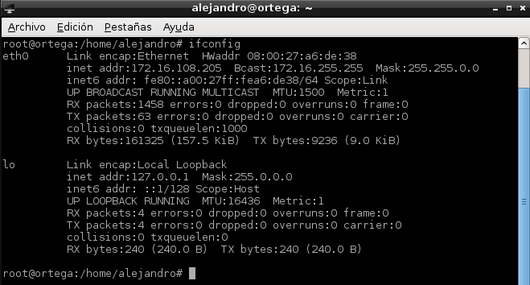
Imagen 1: Resultado del comando ifconfig.
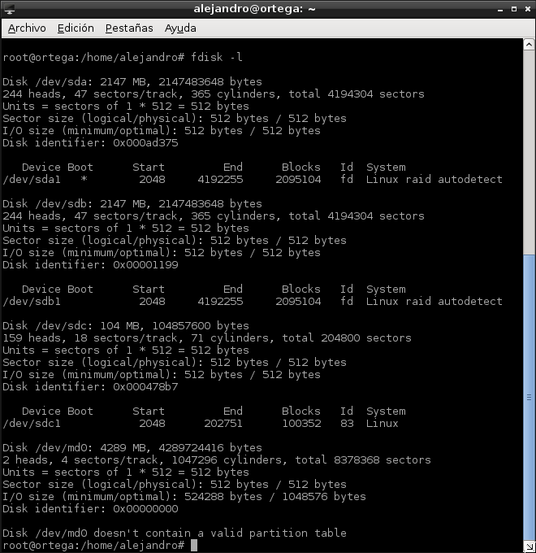
Imagen 2: Resultado del comando fdisk -l.
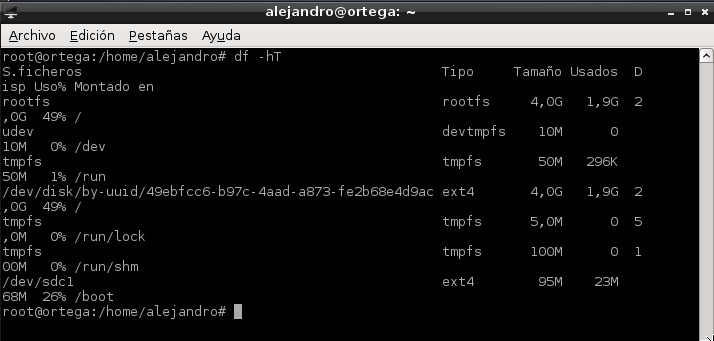
Imagen 3: Resultado del comando df -hT.
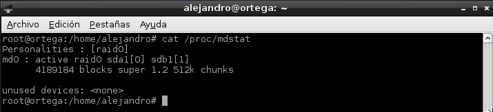
Imagen 4: Resultado del comando cat /proc/mdstat.
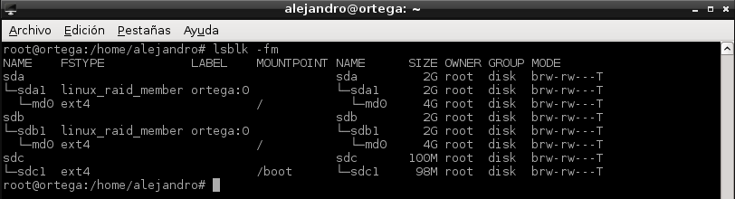
Imagen 5: Resultado del comando lsblk -fm.
 Principio del Bloque 1 / RAID-0
Principio del Bloque 1 / RAID-0
2.- Añadir discos en RAID-1
- Consejo: hacer una copia de seguridad de la MV (Exportar/importar de VBox).
- Ahora vamos a añadir al sistema anterior, dos discos en RAID-1 software.
2.1- Preparar la Máquina Virtual
- NOTA: como las máquinas virtuales de VirtualBox, sólo aceptan 4 discos IDE, o 3 discos IDE y 1 unidad de cdrom, no vamos a poder realizar este ejercicio con el SO instalado anteriormente. Podemos resolverlo: Añadiendo controladores SATA a nuestra máquina virtual.
- Realizar las siguientes tareas:
- Crear 2 discos virtuales: (d) 500MB y (e) 500Mb.
- NOTA: (d) y (e) deben ser del mismo tamaño.
- Reiniciar la MV.
2.2- Usar mdadm para crear RAID-1
- Instalar el paquete mdadm (Administración de dispositivos RAID). Ahora si debe existir el fichero /etc/mdadm/mdadm.conf.
- Crear un RAID-1 (/dev/md1) con los discos (d) y (e) (Consultar URL: comando "mdadm --create"). Para comprobar si se ha creado el raid1 correctamente "cat /proc/mdstat", "lsblk -fm".
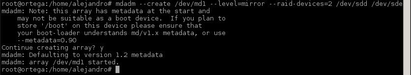
Imagen 6: Crear RAID-1 con mdadm - -create.
- Formatear el RAID-1 con ext4: #mkfs -t ext4 /dev/md1
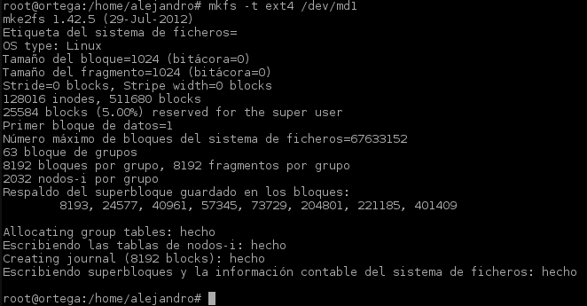
Imagen 7: Dar formato ext4 al RAID-1.
- Montar el RAID-1 (/dev/md1) en /mnt/raid1.
- Ahora podemos escribir información en /mnt/raid1.
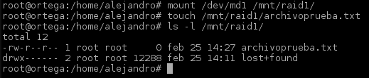
Imagen 8: Montar el RAID-1 en /mnt/raid1 y crear ficherso de prueba.
- Consultar el fichero /etc/mdadm/mdadm.conf. Si al final del archivo de configuración no se muestra información del RAID1, entonces debemos añadirla nosotros manualmente antes de reiniciar el equipo. Para ello nos ayudaremos de la salida del comando siguiente: "mdadm --examine --scan". Con esto conseguimos que el disco RAID1 no pierda su configuración con cada reinicio del sistema.
2.3- Quitar disco y probar
- Apagamos la MV.
- Quitar en VirtualBox uno de los discos del raid.
- Reiniciamos la MVy comprobamos que la información no se ha perdido.
- Volver a poner el disco en la MV, reiniciar y comprobar que todo está correcto.
2.4- Salida de comprobación
- NOTA: para consultar el UUID de una partición podemos usar el comando "blkid" o hacer "vdir /dev/disk/by-uuid".
- Una vez realizado lo anterior, ejecutar los siguientes comandos, y comprobar su salida (incluir en el informe):
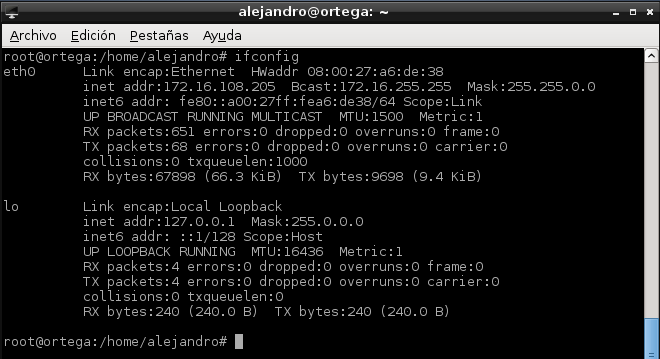
Imagen 9: Resultado del comando ifconfig.
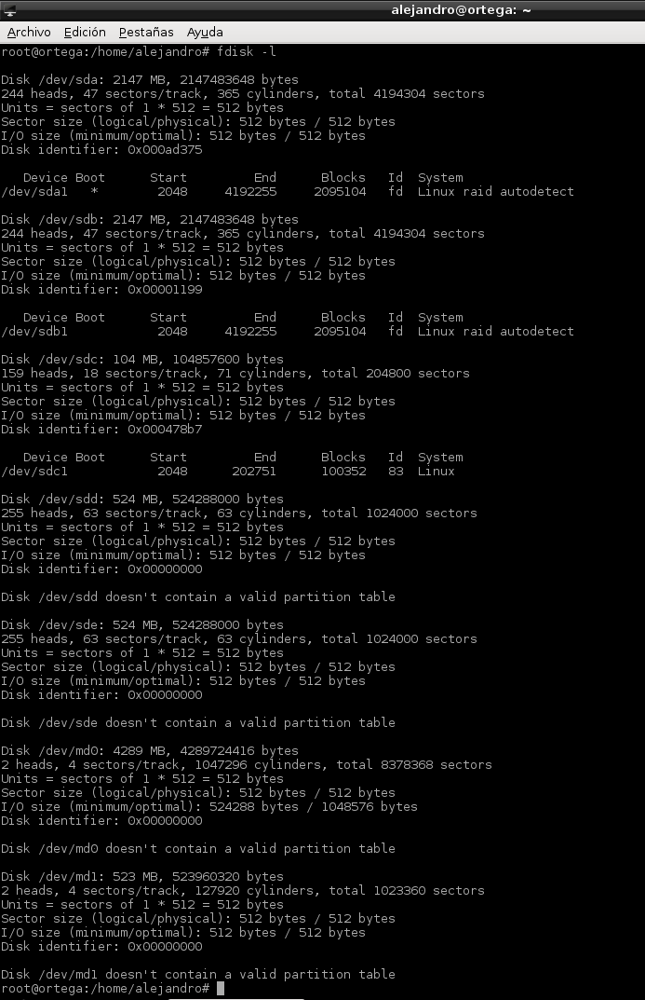
Imagen 10: Resultado del comando fdisk -l.
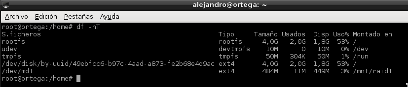
Imagen 11: Resultado del comando df -hT.
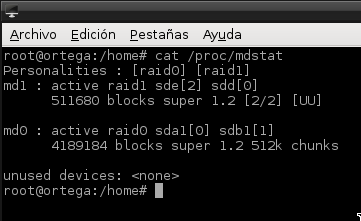
Imagen 12: Resultado del comando cat /proc/mdstat.
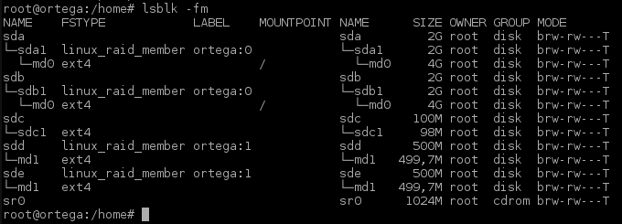
Imagen 13: Resultado del comando lsblk -fm.
- cat /proc/mdadm/mdadm.conf
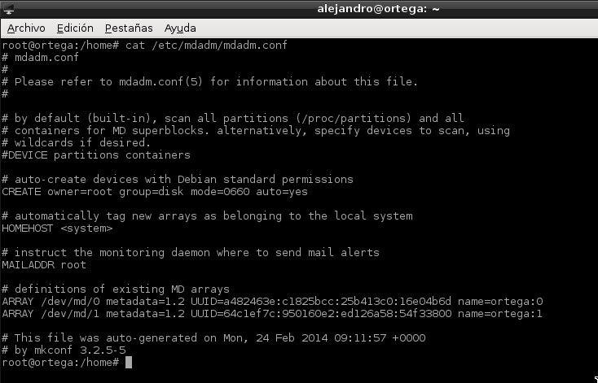
Imagen 14: Resultado del comando cat /proc/mdadm/mdadm.conf.
Principio del Bloque 2 / RAID-1 |  Índice
Índice
Alejandro Ortega Freire - Efraín Hernández Morales 1ºASIR
Implantación de Sistemas Operativos